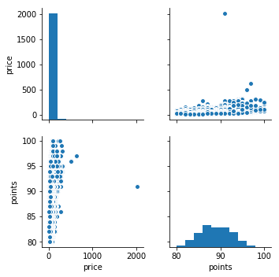

Quality: About This Data Set
I think the data set has fair quality, although there are many missing data found in the table.At least the data of prices and points for wine reviews are consistent in the dataset.
Is the data complete?
If not, what is missing and what concerns does it raise? What is your evidence for this? The data is not very complete. There are many missing values, exactly 174477 entries in the dataset is NaN or empty. These missing values are mainly from the attribute 'Region 2' which is only indicated when there is a more specific region to state. I feel like this problem is as important because the 'Region 1' is more complete. Anothher attribute that has many missing values is price. A lot of these wines in the dataset are foreign wines, so it is probably difficult to obtain the prices of them. This problem could rause concerns as it might raise bias against foreign wines.
Is the data coherent?
Does it make sense relative to itself? Does it match your expectations? Are the distributions sensible? What is your evidence for this? I used the describe() method several times to see if all the numerical entries make sense. My dataset has exactly two numerical attributes: 'price' and 'points'. After removing dropna(), the 'points' columns' statistics seem very reasonable and matches my expectations. However, for the 'price' attribute, I found out that the max price value is 2300 dollars. I'm not sure if that is really a super expensive bottle so I checked that wine. It is in fact described as "A big, powerful wine that sums up the richness" and it is from Bordeaux, France.(Sorry the image doesn't seem to work, but it is included in the templates folder.)
Is the data correct?
What aspects of this data can you verify? How did you do so? What did you find? The dataset seems to be correct, at least in the 'points' category because it is stated that the wines are given points on a scale of 1-100 and I found out that all the values of 'points' fall between 80 and 100. Also, the 'points' column has no missing value, which shows that it is a dataset for wine reviews.